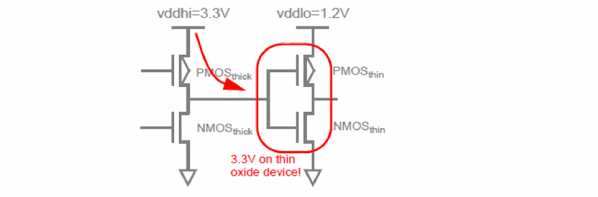
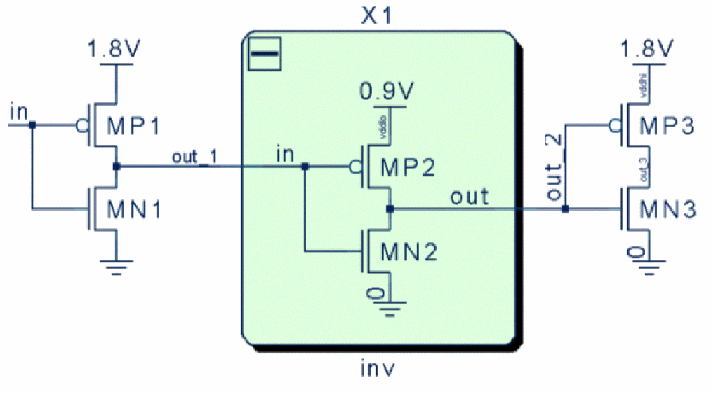
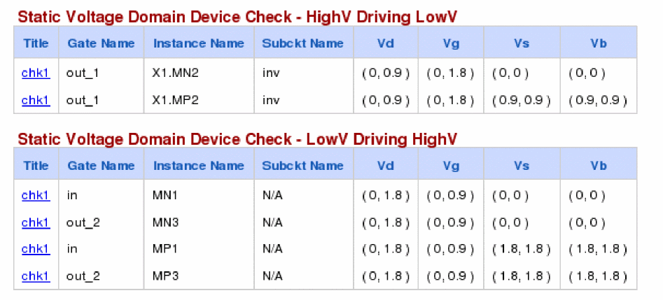

Static Voltage Domain Device Check (static_voltdomain)
Spectre Syntax
title static_voltdomain model=[m1 m2 ...] <inst=[inst1 inst2...]> <xinst=[xinst1 xinst2...]> <subckt=[subckt1 subckt2....]> <xsubckt=[xsubckt1 xsubckt2....]> pwl_time=<value> <depth=n> <rpt_node=no|all|top|selected> error_limit=<value>
SPICE Syntax
.cck title static_voltdomain model=[m1 m2 ...] <inst=[inst1 inst2...]> <xinst=[xinst1 xinst2...]> <subckt=[subckt1 subckt2....]> <xsubckt=[xsubckt1 xsubckt2....]> pwl_time=<value> <depth=n> <rpt_node=no|all|top|selected> error_limit=<value>
Description
Reports high voltage driving the low-voltage MOSFETS and low voltage driving the high-voltage MOSFETs.
The results are written to a file with the extension static.xml, which can be viewed with a Web browser.

Arguments
Example
chk1 static_voltdomain model=[*]
.cck chk1 static_voltdomain model=[*]
The above command will check all instances of MOSFETS. The HighV Driving LowV table reports MOSFETs whose gate voltage is higher than the drain/source voltage. The LowV Driving HighV table reports MOSFETs whose gate voltage is lower than the drain/source voltage.

The following is an example of the report that is displayed in the Web browser:

Note that the Subckt Name is the name of subcircuit containing the instance X1.MN2. This helps in locating level-shifters. If an instance is at the top-level then Subckt Name will show N/A.
Related Topics
Return to top